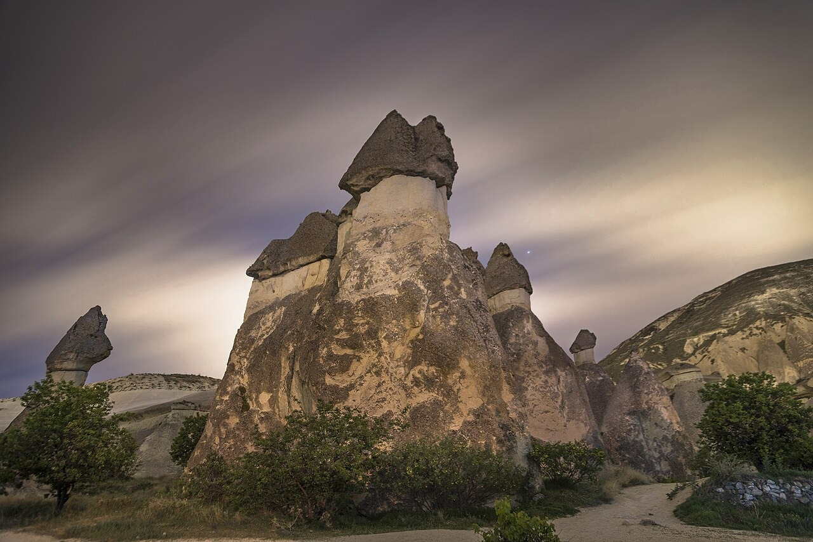
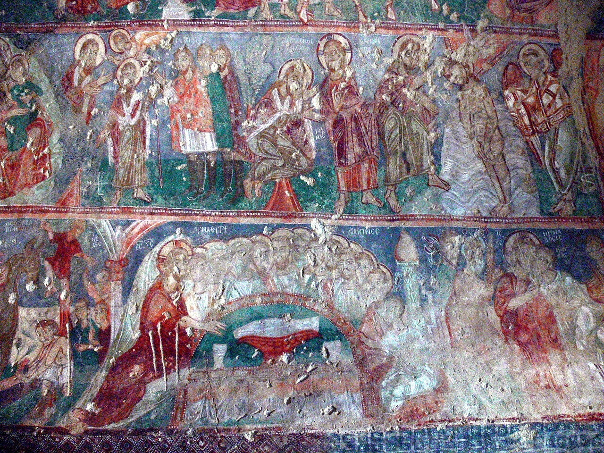
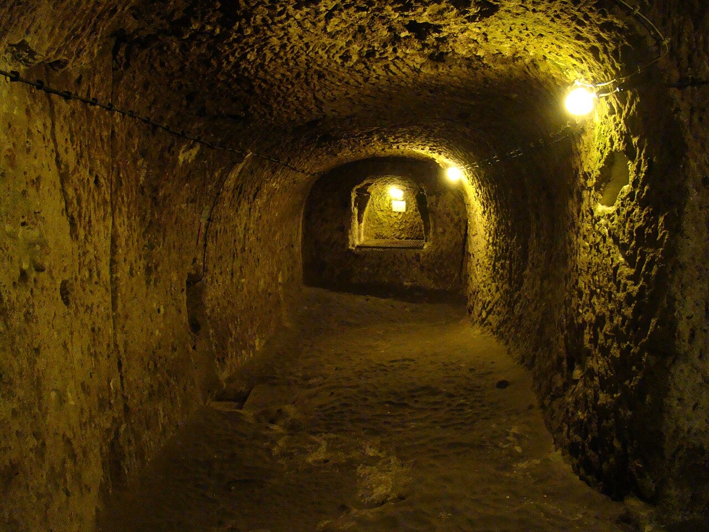
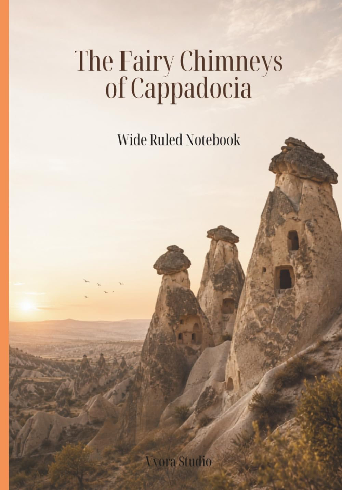

Across central Anatolia, the valleys around Goreme look less like a conventional landscape than the remains of an unfinished dream. Pale towers rise from the valley floor in clusters. Some narrow to a point; others balance dark caps on slender necks. Windows, doorways and rooms appear in their sides, as though an entire city had been left behind by people much larger than us.
They are known in Turkish as Peri Bacalari - fairy chimneys - a name that makes sense when the forms seem too improbable to belong to ordinary geology. Yet their origin is not mysterious. The raw material was laid down by violent volcanism; the shapes came later, through water, wind, frost and time.
Born of Fire, Shaped by Erosion
Cappadocia sits within a long-lived volcanic province. Over millions of years, eruptive activity in central Anatolia spread immense quantities of ash, pumice and hot volcanic debris across the region. These deposits cooled and compacted into layers of tuff and ignimbrite: porous volcanic rock that is comparatively soft and easy to erode. Later volcanic material in places formed tougher layers above it. [1]
The fairy chimneys appeared only after erosion took over. Rain and snowmelt found fractures in the rock. Freeze-thaw cycles widened them. Streams and wind carried away the softer material. Where a tougher cap remained over softer rock, it slowed the wearing-away directly below it while the landscape around it retreated. A pillar was left standing: a chimney wearing a darker stone hat. [2]
The process is not uniform and the shapes are not permanent. A cap can crack, slip or disappear; once it is gone, the softer column beneath it becomes much more vulnerable. Cappadocia is therefore not a gallery of finished sculptures. It is a landscape still in the middle of being made - and unmade.

The variation from valley to valley is part of what makes Cappadocia so compelling. Around Pasabag, some chimneys carry multiple caps and look almost assembled rather than eroded. Elsewhere, such as parts of Goreme and Zelve, the rock has been weathered into sharp cones, ridges and facades. In Devrent Valley, the mind begins to make animals out of the surviving forms: a camel, a seal, a curled creature in the stone. The landscape has no intention of resembling them. We supply the resemblance ourselves.
A Rock Soft Enough to Become a Home
The same volcanic rock that erosion could shape also gave people an unusual building material. Cappadocia's inhabitants did not need to quarry blocks and raise walls in every direction. They could excavate rooms directly into the cliff faces, enlarging chambers as needs changed and leaving the surrounding rock to do the work of support.
According to UNESCO, the earliest signs of monastic activity in Cappadocia date to the fourth century, when small anchorite communities inspired by Basil the Great began inhabiting cells cut into the rock. In later centuries, communities gathered into cave villages and underground refuges as the region faced repeated insecurity and invasion. [3]
This is one of the article's most important facts: Cappadocia was not merely a strange place that people visited. It was a living habitat. Its rock-cut dwellings, storerooms, monasteries and villages were solutions to climate, terrain, faith and danger, refined over generations rather than designed in one grand plan.
When the Walls Began to Teach
The religious landscape of Cappadocia is as remarkable as its geology. During the Byzantine iconoclastic period, from 725 to 842, many sanctuaries used restrained decoration, often crosses carved or painted into the rock. After 842, churches in the region were increasingly covered with vivid figurative frescoes: scenes from the life of Christ, saints, angels and theological stories rendered in colour across ceilings and walls. [3]
Among the best-known churches are Tokali Kilise, the Church of the Buckle, and Karanlik Kilise, the Dark Church. Their paintings were not decoration in the modern sense. In a largely non-literate world, images carried teaching, memory and devotion. The stone rooms became both shelters and books - places in which belief could be entered, seen and remembered.

Cities Beneath the Surface
Cappadocia's story does not end at the cliff face. Beneath the valleys lie underground settlements carved into the same soft volcanic material. Derinkuyu, one of the most famous, contains rooms opening from narrow passages, ventilation shafts, a chapel and a well. The Republic of Turkiye's Ministry of Culture and Tourism describes it as a defensive and hiding place associated with the spread of Christianity and estimates its construction to the ninth or tenth centuries. [4]
Popular accounts often turn Derinkuyu into a single, perfectly known underground metropolis, complete with exact depths, population totals and tunnels reaching every neighbouring site. The reality is more interesting, and more honest: these spaces were created, altered and used over long periods. Their history has layers, just as the landscape above them does. What is beyond dispute is the ingenuity of the design. Ventilation, water, storage, religious spaces and narrow defensible routes made it possible to retreat below ground when the world above became unsafe.

A Landscape That Refuses to Stand Still
In 1985, UNESCO inscribed Goreme National Park and the Rock Sites of Cappadocia on the World Heritage List for the way extraordinary geology and human history are intertwined here. The listing includes the valleys, rock-hewn churches, troglodyte villages and subterranean towns of the region. [3]
It is easy to treat Cappadocia as a place made for photographs. But that misses the deeper strangeness of it. The chimneys were created by processes indifferent to human life. People then entered this unstable terrain and made homes, monasteries, sanctuaries and refuges within it. The result is not simply a natural wonder and not simply an archaeological site. It is a long conversation between eruption, erosion, survival and faith.
The fairy chimneys will not last forever in their present forms. That is not a flaw in the landscape; it is the point. Cappadocia is beautiful because it makes time visible. Its towers are records of ancient fire, slow weather and human persistence - all standing together for a while.

Vyora Studio Notebook
Inspired by this story
The Fairy Chimneys of Cappadocia Notebook
Inspired by Cappadocia's extraordinary landscape - its sculpted valleys, ancient cave dwellings, soft volcanic hues, and dreamlike skies filled with hot-air balloons - Vyora Studio created a notebook cover that carries a small echo of this remarkable place. It is not meant to recreate Cappadocia, but to hold onto the feeling it leaves behind: wonder, stillness, and the sense of having stepped briefly into another world.
View on Amazon →This notebook is an independent creative work by Vyora Studio. It is not affiliated with or endorsed by any conservation organisation or institution mentioned in this story.
SOURCES & IMAGE CREDIT
- 1. Le Pennec, J.-L., Temel, A., Froger, J.-L., Sen, S., Gourgaud, A. and Bourdier, J.-L. (2005). “Stratigraphy and age of the Cappadocia ignimbrites, Turkey: Reconciling field constraints with paleontologic, radiochronologic, geochemical and paleomagnetic data.” Journal of Volcanology and Geothermal Research, 141(1-2), 45-64. DOI: https://doi.org/10.1016/j.jvolgeores.2004.09.004
- 2. Sarikaya, M. A., Ciner, A. and Zreda, M. (2015). “Fairy chimney erosion rates on Cappadocia ignimbrites, Turkey: Insights from cosmogenic nuclides.” Geomorphology, 234, 182-191. DOI: https://doi.org/10.1016/j.geomorph.2014.12.039
- 3. UNESCO World Heritage Centre. “Goreme National Park and the Rock Sites of Cappadocia.” Accessed 2 July 2026. https://whc.unesco.org/en/list/357/
- 4. Republic of Turkiye Ministry of Culture and Tourism. “Derinkuyu Underground City.” Accessed 2 July 2026. https://www.ktb.gov.tr/EN-113738/derinkuyu-underground-city.html
Image Credits
- All four images are embedded in this document and are reusable under the licences stated below. Keep the author credit, Wikimedia Commons attribution and licence wording when posting the images on Blogger.
- Fairy chimneys near Goreme - Benh LIEU SONG, Wikimedia Commons, CC BY-SA 3.0. View source
- Monks Valley, Pasabag - Theugursevinc, Wikimedia Commons, CC BY-SA 4.0. View source
- Tokali Kilise fresco - Wolfgang Sauber, Wikimedia Commons, CC BY-SA 3.0. View source
- Derinkuyu Underground City - Bjorn Christian Torrissen, Wikimedia Commons, CC BY-SA 3.0. View source
Read Next
Read Next

The Kākāpō — A Parrot Unlike Any Other
New Zealand’s moonlit, flightless, remarkably heavy parrot — and the patient work of bringing it back from the edge of extinction
On Whenua Hou, the night carries a deep, resonant boom—the courtship call of one of the world’s rarest and most unusual parrots.
Read story →
The Ocean’s Own Mandala Makers
A single-celled creature too small to notice in open water has been building radial geometry long before humans gave such patterns names.
Radiolarians are single-celled ocean organisms that build intricate silica skeletons—tiny natural geometries hidden beneath the waves.
Read story →